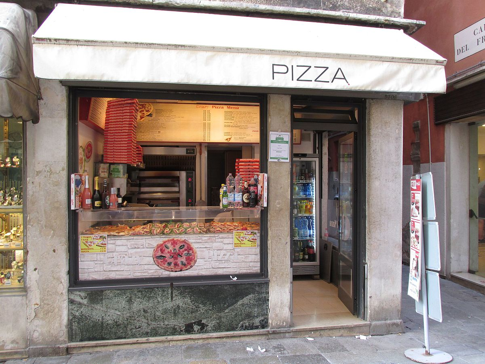

Soy un apasionado de los negocios internacionales y el análisis de datos. Mi enfoque se centra en la comprensión de los mercados globales y el poder de los datos para tomar decisiones informadas. Con sólidos conocimientos técnicos y habilidades de comunicación, me esfuerzo por abordar desafíos complejos y convertirlos en soluciones efectivas.
Investigación y análisis de datos de ventas de una tienda minorista para identificar patrones de compra, tendencias estacionales y oportunidades de mejora en la estrategia de ventas utilizando Python.

Proyecto de análisis de datos de una tienda de pizza que utiliza SQL para extraer información clave de las ventas, clientes y productos. Luego, se emplea Excel para visualizar tendencias de ventas, identificar patrones de consumo.

Exploración y análisis de datos de una tienda en línea para identificar patrones de compra, tendencias de productos más vendidos y perfiles de clientes, con el objetivo de tomar decisiones estratégicas basadas en datos para mejorar la rentabilidad y la satisfacción del cliente.
Proyecto de análisis de datos que examina la evolución de la industria de los videojuegos a lo largo del tiempo, revelando tendencias clave en el crecimiento del mercado, preferencias de los jugadores y el impacto de avances tecnológicos en esta industria en constante evolución.